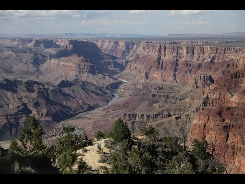
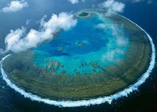
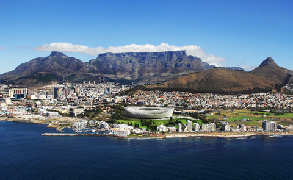
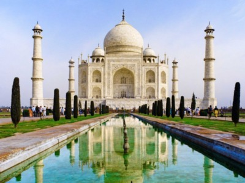
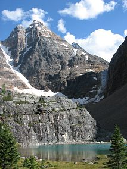
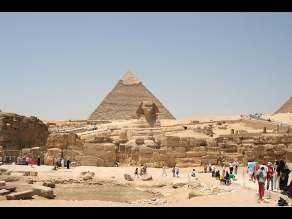

США, United States Гранд-Каньон, The Grand Canyon
Едва ли не самое красивое место в мире – это американский Гранд-Каньон. Он является одним из самых глубоких на планете. Находится достопримечательность близ города Колорадо, штата Аризона.Длина каньона равняется 446 километрам, а ширина варьируется от 6 до 29 километров. И это на уровне плато. На уровне дна у этого места ширина менее километра. Глубина каньона составляет 1600 метрам.
Австралия, Большой Барьерный риф
Это природное чудо света. Большой Барьерный риф расположился у восточного побережья Австралии, его омывают воды достаточно глубкого Кораллового моря. Он представляет из себя самый большой коралловый риф в мире. Состоит достопримечательность из 2,5 тысяч рифов. Некоторые из них небольшие, площадью не больше гектара, некоторые занимают площадь до 100 квадратных километров.Общая площадь всего рифа равняется почти 349 квадратным километрам. Для сравнения, это больше, чем площадь всей Великобритании.
Южная Африка, Кейптаун
Это красивейшее место называют «раем на земле». И название свое оно оправдывает. Прекрасный город, который находится на самом конце африканского континента, окружили огромные горы. Этот факт заставляет человека почувствовать себя маленьким существом посреди огромного великолепия.
Индия, Тадж-Махал
Индийский Тадж-Махал находится в списке чудес света.Пятикупольный мавзолей возвышается над землей на 74 метра . Стоит Тадж-Махал на платформе, по углам расположились четыре минарета, которые слегка наклонены в сторону от главной усыпальницы. Сделано это для того, чтобы в случае землетрясения, снизить вероятность разрушения главной постройки. К Тадж-Махалу примыкает сад с бассейном и фонтанами.Стены мавзолея выложены из полупрозрачного полированного мрамора. В свое время его привезли на строительство из каменоломен за 300 километров. Мрамор инкрустирован самоцветами: малахитом, агатом, бирюзой, сердоликом. У мрамора есть интересная особенность: при дневном свете он выглядит белым, в лунную ночь серебристым, а на заре розовым.
Канада, Канадские Скалистые горы
Канадские Скалистые горы каждый год привлекают взоры тысячи туристов. И не зря. Это красивейшее место с горными ландшафтами. Здесь есть озера, каньоны, ледники, водопады, вершины, а также известняковые пещеры. Достопримечательность вписали в список объектов Всемирного наследия ЮНЕСКО.
Перу, Мачу-Пикчу

Иногда это место называют «Потерянным городом инков». Его основал правитель инков Пачакутек, как священный горный приют.Случилось это за сто лет до завоевания его империи, получается, что примерно в 1440 году. Функционировал потерянный город до 1532 года, вплоть до того момента, когда испанцы вторглись на территорию инков. В тот год все жители исчезли таинственным образом.
Египет, Пирамиды
Об этих достопримечательностях слышали практически все и многим даже удалось на них посмотреть. Египетские пирамиды являются довольно массивными памятниками. Строительство этих сооружений египтяне начали после 2700 года до нашей эры. И предназначались они в то время для умерших фараонов, в качестве места упокоения.Сейчас в стране насчитывается ровно 118 пирамид. И все они занимают достойное место в рейтинге самых красивых мест мира. К слову, при упоминании египетских пирамид, обычно, имеют ввиду Великие Пирамиды. Они располагаются в Гизе, которая находится недалеко от Каира. Впрочем, это далеко не единственные пирамиды в Египте.